复杂需求拆分：大 PRD 不能直接丢给 Agent
很多团队在 AI Coding 中遇到的不稳定，不是模型完全不懂业务，而是输入太大、边界太混。一个需求文档里可能同时包含新增配置、改接口、补查询、兼容存量、调整权限、增加监控，还涉及多个模块和多类测试。直接把整篇 PRD 丢给 Agent，结果往往是大方案、大计划、大 diff：看起来很完整，但很难评审，也很难确认每个功能点是否真的被实现和验证。
复杂需求需要先被结构化。这里的“拆分”不是项目管理意义上的排期拆分，也不是一上来就把一个需求拆成多个子项目，而是先把 PRD 变成 Agent 和评审人都能稳定消费的功能点切片。每个切片都应该能回答四个问题：这个功能点要做什么，涉及哪些范围，验收标准是什么，可能关联哪些代码和规则。
这里还有一个容易被低估的点：功能切片的真相源仍然是 PRD，但切片边界不能只看 PRD 文本。系统里已经维护的领域 SPEC、业务规则、工程约束、代码索引和历史案例，都可以用来校准切片边界。它们不能替 PRD 新增需求，但能帮助团队识别“这个功能属于哪个领域、有哪些既有规则、设计前还有哪些问题必须确认”。
功能点切片的价值在于让后续阶段围绕同一组边界工作：上下文选择按切片找证据，技术设计按切片说明影响面，开发计划按切片拆 task，验证证据按切片回到验收标准。没有这个结构，AI 很容易在每个阶段重新理解一次需求，最后前后不一致。
一句话结论：复杂需求交给 AI 之前，先要把需求拆成可验收、可追溯、可进入上下文选择的功能切片。
一、一个真实问题：大 PRD 为什么容易变成大 diff
假设 PRD 标题是“新增奖品权益类型支持”。正文里可能包含这些内容：
- 新增权益类型枚举。
- 配置导入支持新类型。
- 创建接口允许选择新类型。
- 查询接口展示新类型名称。
- 存量类型保持兼容。
- 管理端暂时不新增配置入口。
- 需要补充埋点和监控。
- 需要覆盖退款和履约链路不受影响。
如果直接把这份 PRD 给 Agent，Agent 可能会按技术层拆：
- 改 Controller。
- 改 Service。
- 改 DAO。
- 改枚举。
- 补测试。
这种拆法不是完全错，但它没有回答业务验收问题：新增类型到底是哪几个链路要支持？哪些链路只是回归验证？哪些模块是主改动，哪些只是兼容确认？如果计划阶段不清楚，开发阶段就会变成大范围探索式修改。最后 diff 很大，评审人也很难判断“这个需求是否完整交付”。
更合理的做法是先按功能点切片：
| 功能切片 | 目标 | 验收 |
|---|---|---|
| feature-01 新权益类型识别 | 系统能识别新增权益类型并生成配置 | 新类型可创建，非法类型被拦截 |
| feature-02 查询展示兼容 | 查询接口能展示新类型名称，存量类型不变 | 新旧类型查询结果符合预期 |
| feature-03 回归影响确认 | 退款、履约、监控链路不受影响 | 相关回归测试通过或有 baseline 证据 |
这样后续无论是上下文选择、设计、计划还是验证，都能围绕功能边界展开，而不是围绕代码文件猜测需求。
常见误区
| 误区 | 表现 | 后果 |
|---|---|---|
| 整篇 PRD 直接进 Agent | Agent 自己理解、自己拆、自己设计 | 每个阶段可能拆法不同，前后不一致 |
| 功能点和执行切片混在一起 | 识别出 5 个功能点，就默认开 5 条开发流 | 过早复杂化，状态管理和验收成本上升 |
| 只按代码模块拆 | Controller、Service、DAO 各一块 | 忽略业务验收边界，容易实现碎片化 |
| 只按 PRD 标题拆 | 标题像功能点就直接作为切片 | 无法保证验收、代码、规则能对应上 |
| 切片后不进入上下文选择 | 文件拆了，但 Agent 仍读全文和全仓 | 拆分没有减少复杂度 |
复杂需求拆分的关键，是先稳定需求结构，再让上下文和计划围绕这个结构工作。
一个判断：PRD 大不等于要分片交付
很多团队一看到大 PRD，就想把它拆成多个执行流。这个反应很自然，但不一定正确。PRD 大通常先说明“上下文需要拆”，不一定说明“交付也要拆”。
| 情况 | 建议处理 |
|---|---|
| PRD 很长，但属于同一业务目标 | 先做 context slice，帮助设计和计划聚焦 |
| 涉及多个业务 owner | 考虑执行切片，但需要负责人确认边界 |
| 涉及多个发版窗口 | 考虑 program slice，分阶段验收 |
| 只是包含很多实现细节 | 不要拆执行流，把细节放到 design/plan |
| 横跨多个领域模型且互相依赖 | 先生成 requirement contract，再判断是否 program |
这条边界很关键：切片首先是理解和上下文工具，其次才可能成为执行工具。
设计原则
第一，功能切片先是上下文单元，不默认是执行单元。识别出功能点，只说明上下文可以更聚焦，不代表一定要拆成多个独立开发项目。
第二，切片必须保留原始证据。每个功能点都要能追溯到 PRD 原文片段，避免 Agent 或人把总结当成需求真相。
第三，切片要连接验收、规则和代码。只有标题和摘要不够，后续还要能关联验收项、候选模块、SPEC 和 code refs。
第四，切片粒度要面向业务验收，而不是面向代码文件。一个切片应该对应业务方能理解的一项能力或影响面，而不是一个方法、一个枚举或一个 Mapper。
二、切片前先做 PRD 消毒
把原始需求变成稳定 PRD 前，建议先做一次“消毒”。目的不是改写业务方意思，而是把混在一起的信息分层。
| 原始内容 | 处理方式 |
|---|---|
| 业务目标、范围、验收 | 进入 prd.md 正文 |
| 技术方案建议 | 保留在 source 或 design input，不直接变成 PRD 真相 |
| 临时沟通结论 | 标注来源和确认状态 |
| 不确定字段 | 写成 open question，不让 Agent 猜 |
| 明确非目标 | 写入 scope out，防止开发越界 |
这一步能减少后续常见问题：Agent 把业务方的“可能方案”当成硬要求，把未确认事实当成设计前提。
从原始需求到稳定 PRD
团队 AI Coding 工程化框架不应该把需求来源直接交给后续 Agent，而是先生成稳定 PRD 产物。

典型任务目录如下：
.team-agent/tasks/{taskId}/
├── prd.md
├── sources/
│ ├── requirement.json
│ ├── wiki.md
│ └── manual-prd.md
└── prd/
├── overview.md
├── index.json
├── cross-cutting.md
├── feature-01.md
├── feature-02.md
└── feature-03.md
这里有三个层次：
sources/*保存原始来源，解决追溯问题。prd.md是用户确认后的稳定需求产物，解决需求真相源问题。prd/overview.md、prd/index.json、prd/feature-*.md是可重建 companion 文件，解决后续上下文选择和功能点拆分问题。
如果团队暂时没有自动 builder，也可以人工维护这个结构。关键不是自动化程度，而是 PRD 确认后，后续阶段都围绕同一个稳定结构工作。
三、功能点切片如何生成
一个通用的 PRD builder 可以按五步生成候选功能切片：
- 按 Markdown 二级标题拆分 PRD 顶层章节。
- 识别标题中带有
功能、feature、模块、场景、能力或编号结构的章节。 - 为每个章节生成稳定 ID，例如
feature-01。 - 从章节正文中提取摘要、验收项和候选模块。
- 根据功能数量、PRD 长度、仓库复杂度判断上下文模式和风险信号。
候选切片生成后，还要用其他工程资产做一次校准。这里要分清每类输入的职责：
| 输入 | 用来做什么 | 不能做什么 |
|---|---|---|
| PRD | 决定本次要做什么、验收什么 | 不能被 SPEC 覆盖 |
| SPEC | 校准领域边界、业务规则、设计前确认问题 | 不能凭空新增需求 |
| Code Index | 判断候选实现路径、测试入口和风险热点 | 不能反推业务目标 |
| Archive Case | 提醒历史相似风险和验证经验 | 不能替代当前验收标准 |
比较稳的顺序是：先从 PRD 生成候选切片，再用命中的 domain / business SPEC 补充 specRefs、设计前问题和规则约束，再用 code index 推断候选路径，最后用 archive case 提醒历史风险。这样切片既不脱离当前需求，也不会忽略系统已有知识。
生成的 prd/index.json 类似这样：
{
"taskId": "REQ-123456",
"title": "新增奖品权益类型",
"mode": "expanded",
"source": "wiki",
"overviewPath": ".team-agent/tasks/REQ-123456/prd/overview.md",
"prdPath": ".team-agent/tasks/REQ-123456/prd.md",
"crossCuttingPath": ".team-agent/tasks/REQ-123456/prd/cross-cutting.md",
"features": [
{
"id": "feature-01",
"title": "功能一：新增权益类型识别",
"path": ".team-agent/tasks/REQ-123456/prd/feature-01.md",
"summary": "支持新权益类型识别、配置生成和创建接口校验",
"acceptance": ["新权益类型可创建", "非法类型被拦截"],
"modules": ["权益类型", "奖品配置"],
"specRefs": [".team-agent/spec/app/business/prize-type.md"]
},
{
"id": "feature-02",
"title": "功能二：查询展示兼容",
"path": ".team-agent/tasks/REQ-123456/prd/feature-02.md",
"summary": "查询接口展示新类型名称，存量类型展示不变",
"acceptance": ["新类型可查询展示", "存量类型返回结构不变"],
"modules": ["查询接口", "展示映射"],
"specRefs": [".team-agent/spec/app/business/prize-type.md"]
}
]
}
对应的功能切片文件会保留更适合人阅读的内容：
# 功能切片 feature-01
## 基本信息
- 需求标题: 新增奖品权益类型
- 功能标题: 功能一：新增权益类型识别
- 来源: wiki
## 摘要
支持新权益类型识别、配置生成和创建接口校验。
## 相关模块
- 权益类型
- 奖品配置
## 验收与范围
- 新权益类型可创建
- 非法类型被拦截
- 存量权益类型创建行为不变
## 风险信号
- 新枚举可能影响存量配置解析。
- 创建链路和查询链路使用的类型映射可能不是同一个入口。
## 原始片段
这里保留 PRD 中与该功能点直接相关的原文。
注意，summary、modules 和 specRefs 都是帮助后续选择上下文的结构化信息，不替代原始片段。评审人和 Agent 必须能回到原文确认需求含义。
用 SPEC 校准切片边界
如果团队已经维护了领域或业务 focused SPEC，功能切片就不应该只靠 PRD 标题机械生成。SPEC 可以帮助回答几个问题：
| 问题 | SPEC 能提供的帮助 |
|---|---|
| 这个功能属于哪个领域？ | 用已有领域模型和业务术语统一命名 |
| 这个功能有哪些长期规则？ | 找到创建、查询、展示、兼容、灰度、验证等固定要求 |
| 设计前有什么必须确认？ | 从 SPEC 的确认问题里提取待确认事实 |
| 哪些路径只是回归，不是新增需求？ | 用历史规则区分主改动和影响确认 |
比如 PRD 只写了“新增权益类型支持”，SPEC 里已经沉淀过“权益类型变更必须覆盖创建、查询、展示、存量兼容”。这时切片不应该只生成一个“新增类型”大块，而应该至少识别出主功能切片和回归影响切片。反过来，如果 SPEC 里有“查询展示必须回归”，但 PRD 明确说明“本次不涉及查询展示”，那就不能把它写成新增需求，只能作为风险提示或非目标确认问题。
这就是 PRD 和 SPEC 的边界：PRD 决定需求事实，SPEC 提供领域校准。
功能切片的命名技巧
切片命名不要像代码任务，也不要太抽象。推荐格式是：
feature-序号 + 业务能力 + 结果
好的例子：
feature-01 新权益类型识别和创建校验feature-02 查询展示兼容feature-03 退款履约影响确认
不好的例子：
feature-01 改 Servicefeature-02 补测试feature-03 后端逻辑
好的切片标题应该让业务方、研发、测试和 Agent 都能理解它对应哪一段需求。
切片粒度怎么判断
功能切片不是越多越好。粒度太粗，无法减少复杂度；粒度太细，计划和上下文会碎片化。可以用下面几个判断标准。
| 判断问题 | 如果答案是“是” | 处理方式 |
|---|---|---|
| 这个功能点能被业务方独立理解吗？ | 是 | 可以作为候选切片 |
| 它是否有独立验收标准？ | 是 | 应该保留为切片 |
| 它是否只对应一个代码文件或方法？ | 是 | 通常不应单独成切片 |
| 它是否只是另一个功能点的实现细节？ | 是 | 放入父切片的相关模块或 task |
| 它是否跨 owner、跨领域或跨发版窗口？ | 是 | 可能需要升级为执行切片 |
| 它是否只是全局约束，例如日志、监控、兼容？ | 是 | 放入 cross-cutting.md 或切片风险 |
经验上，一个中等复杂需求拆 3 到 7 个功能切片比较常见。超过 10 个切片时，要反过来检查 PRD 是否本身包含多个独立需求。
三种切片层级
复杂需求拆分最容易混淆的地方，是把“功能点切片”直接等同于“分片交付”。这两者不是一回事。
| 层级 | 产物 | 作用 | 是否代表独立执行 |
|---|---|---|---|
| Context Slice | prd/index.json、prd/feature-*.md |
帮助 selector 选择 PRD evidence、code refs、SPEC | 否 |
| Delivery Support | generated/delivery/requirement-contract.json、slice-manifest.json |
在 expanded 或 program 场景冻结需求目标、切片、依赖、候选路径 | 不一定 |
| Program Slice | generated/context/prd.slice-{sliceId}.jsonl、code.slice-{sliceId}.jsonl、verification-ledger.slice-{sliceId}.jsonl |
用户确认分片交付后，围绕当前切片执行 | 是 |
这个边界很重要。大多数复杂需求只需要 context slice：让设计、计划、上下文选择更聚焦。只有当需求确实跨 owner、跨发版窗口、跨领域，或者需要分段验收时，才应该升级为 program slice。
建议规则是：large_prd、multi_domain、contextMode=expanded 只触发更强的上下文支持，不自动进入 program mode。只有负责人显式确认分片执行边界后，切片才成为执行边界。
什么时候必须让人确认切片
不是所有切片都需要人工逐个确认。团队要避免把流程做得太碎。但下面几类情况应该停下来确认：
| 信号 | 为什么要确认 |
|---|---|
| 切片之间有强依赖 | 执行顺序会影响设计和发布 |
| 切片跨不同 owner | 需要明确谁验收、谁承担风险 |
| 某个切片包含高风险存量改动 | 可能需要独立回滚和灰度 |
| PRD 中存在互相矛盾的验收项 | 不能让 Agent 自己裁剪需求 |
| 自动拆分超过 10 个切片 | 可能其实是多个需求 |
确认的目标不是让用户逐字审切片，而是确认“边界、顺序、验收和非目标”。
Requirement Contract 和 Slice Manifest
当需求足够复杂，需要冻结更明确的交付支持信息时，可以生成 generated/delivery/*。
.team-agent/tasks/{taskId}/generated/delivery/
├── requirement-contract.json
├── slice-manifest.json
└── manual-slice-input.md
requirement-contract.json 用来冻结需求目标和验收边界。它不是替代 PRD，而是给后续设计、计划、开发提供机器可读的需求契约。
{
"taskId": "REQ-123456",
"title": "新增奖品权益类型",
"goals": [
{
"id": "REQ-001",
"featureId": "feature-01",
"statement": "系统支持新增权益类型识别和配置生成",
"acceptance": ["新权益类型可创建", "非法类型被拦截"]
},
{
"id": "REQ-002",
"featureId": "feature-02",
"statement": "查询接口展示新类型名称且存量类型不变",
"acceptance": ["新类型可查询展示", "存量类型返回结构不变"]
}
],
"crossCutting": [
"需要确认存量类型兼容策略",
"需要补充查询和展示回归验证"
]
}
slice-manifest.json 用来描述切片、依赖、候选规则和候选代码路径。它通常不是只从 PRD 生成，而是在 PRD 候选切片基础上合并已选择的 SPEC 和代码索引信号。
{
"taskId": "REQ-123456",
"mode": "context",
"source": {
"mode": "auto",
"inputs": ["prd"]
},
"calibrationSignals": ["selected_specs", "code_index"],
"slices": [
{
"id": "feature-01",
"title": "功能一：新增权益类型识别",
"objective": "支持新权益类型识别、配置生成和创建接口校验",
"requirementRefs": ["REQ-001"],
"specRefs": [".team-agent/spec/app/business/prize-type.md"],
"runtimeRuleRefs": [".team-agent/spec/app/business/prize-type.md#Runtime Rules"],
"dependsOn": [],
"riskSignals": ["large_prd"],
"candidateDomains": ["权益类型"],
"candidatePaths": ["src/main/java/..."]
}
]
}
这两个文件的作用是让后续阶段有稳定边界：
- designer 可以围绕切片目标和跨切面约束写设计。
- planner 可以把任务拆到更清晰的功能边界。
- context selector 可以选择相关 SPEC 和 code refs。
- worker 在 program mode 下可以只消费当前 slice 的 working set。
切片如何进入上下文选择
功能切片只有进入上下文选择，才真正降低复杂度。

selector input 可以包含：
- 当前任务摘要。
prd/index.json中的 features。slice-manifest.json中的 slices。- SPEC route cards 和 business Spec candidates。
- code-index cards。
- archive case cards。
- 预算、阶段、Agent、fingerprint。
输出可以写入：
.team-agent/cache/tasks/{taskId}/context-selection.json
典型字段如下：
{
"selectedSlices": [
{
"id": "feature-01",
"reason": "当前需求主要涉及新增权益类型识别和配置生成"
}
],
"selectedCodeRefs": [
{
"path": "src/main/java/com/example/prize/PrizeTypeService.java",
"reason": "处理奖品类型识别和配置生成"
}
],
"selectedSpecRefs": [
".team-agent/spec/app/business/prize-type.md"
]
}
之后 runtime 会把这些选择转成阶段 working set，例如：
.team-agent/tasks/{taskId}/generated/context/
├── prd.jsonl
├── code.jsonl
├── prd.slice-feature-01.jsonl
└── code.slice-feature-01.jsonl
non-program 模式下，通常只消费共享的 prd.jsonl 和 code.jsonl；program mode 下，当前切片才会使用 slice 专属 working set。
切片如何影响设计和计划
切片不能只停留在 prd/ 目录里，它要继续进入 design.md 和 plan.md。
design.md 可以按功能切片说明影响面：
## 功能切片设计
### feature-01 新权益类型识别
- 目标：支持新权益类型识别、配置生成和创建接口校验。
- 影响模块：PrizeTypeService、PrizeConfigParser、CreatePrizeRequestValidator。
- 兼容策略：存量类型映射保持不变，新增类型走独立枚举分支。
- 风险：配置解析和查询展示使用不同映射入口，需要统一回归。
### feature-02 查询展示兼容
- 目标：查询接口展示新类型名称，存量类型展示不变。
- 影响模块：PrizeQueryService、PrizeTypeDisplayMapper。
- 验证：新增类型查询测试，存量类型查询回归测试。
plan.tasks.json 里每个 task 要能回到功能切片：
{
"tasks": [
{
"id": "TASK-001",
"featureId": "feature-01",
"title": "支持新权益类型识别和创建校验",
"allowedPaths": [
"src/main/java/com/example/prize/PrizeTypeService.java",
"src/test/java/com/example/prize/PrizeTypeServiceTest.java"
],
"verificationCommands": [
"mvn -Dtest=PrizeTypeServiceTest test"
],
"acceptanceCriteria": [
"新权益类型可创建",
"非法类型被拦截",
"存量类型创建行为不变"
]
}
]
}
这样做的好处是，后续代码 diff、测试证据和验收标准能形成闭环。如果 task 只写“修改 Service 逻辑”，评审人很难知道它服务于哪个需求目标。
四、团队参考做法
团队刚开始不需要完整实现 builder、selector 和 program mode，可以先做一个简化版需求切片机制。
第一阶段，先让 PRD 结构化：
.team-agent/tasks/{taskId}/
├── prd.md
└── prd/
├── overview.md
├── index.json
└── feature-01.md
prd/index.json 只需要包含：
{
"taskId": "T-001",
"title": "需求标题",
"features": [
{
"id": "feature-01",
"title": "功能点标题",
"summary": "功能点摘要",
"acceptance": ["验收项 1", "验收项 2"],
"modules": ["候选模块"],
"specRefs": [".team-agent/spec/app/business/example.md"],
"sourcePath": ".team-agent/tasks/T-001/prd/feature-01.md"
}
]
}
第二阶段，把切片接入设计和计划：
design.md中按功能点说明影响范围。plan.md中按功能点拆 task。plan.tasks.json中每个 task 标注相关featureId、requirementRefs和specRefs。- 验证命令和验收标准要能回到 feature。
第三阶段，再考虑 program mode：
- 只有跨 owner、跨领域、跨发版窗口的需求才升级。
- 每个执行切片要有独立验收和验证证据。
- 切片之间依赖要显式记录。
- 不要因为 PRD 大就自动开多条执行流。
常见坑
| 坑 | 表现 | 建议 |
|---|---|---|
| 按代码层拆切片 | Controller / Service / DAO 各一片 | 切片按业务能力拆，代码层放在 candidatePaths |
| 切片没有原文 | 只有模型总结 | 每个切片保留原始 PRD 片段 |
| 切片没有验收 | 只有标题和摘要 | 没有验收标准的切片不能进入计划 |
| 切片不看已有 SPEC | PRD 标题怎么写就怎么拆 | 用 SPEC 校准领域边界和设计前确认问题 |
| 切片过细 | 一个枚举一个切片，一个字段一个切片 | 合并到业务功能点，细节放 task |
| 切片过粗 | 一个切片包含 8 个业务目标 | 拆成多个 feature，或确认是否多个需求 |
| 自动升级执行流 | 看到多切片就开多条开发流 | 默认只做上下文切片，执行切片需显式确认 |
| 切片不进计划 | prd/feature-*.md 写了，但 task 不引用 |
plan.tasks.json 增加 featureId |
切片质量检查
一个好的功能切片至少要满足：
- 有稳定 ID，例如
feature-01。 - 有清晰标题和摘要。
- 有原始 PRD 片段。
- 有验收项。
- 有候选业务模块或领域。
- 能关联相关 SPEC。
- 能说明这些 SPEC 是规则校准，不是新增需求来源。
- 能帮助选择代码上下文。
- 能在计划中映射到 task。
切片不是越细越好。过细会导致上下文碎片化，评审人也难以把握整体需求。经验上，一个切片应该对应一个可以被业务方理解的功能点，而不是一个技术方法或一个代码文件。
五、检查清单
可以用下面的问题检查复杂需求拆分是否有效：
- 大 PRD 是否先生成了稳定
prd.md？ - 每个功能点是否保留原始需求片段？
- 切片是否有验收项，而不只是标题？
- 是否区分 context slice 和 program slice？
- 是否避免因为
large_prd就自动进入多执行流？ - 设计和计划是否引用了功能切片？
- 上下文选择是否使用了 selectedSlices？
- 每个执行 task 是否能回到具体功能点、需求契约、SPEC 和验收标准？
如果这些问题没有答案，先不要急着让 Agent 开发。先把需求结构稳定下来，再进入设计、计划和代码修改。
六、思考与实践
- 选一个你最近做过的大需求，能不能拆成 3-7 个业务功能切片？每个切片是否都有独立验收标准？
- 你们团队现在更常按业务功能拆需求，还是按 Controller / Service / DAO 这类代码层拆任务？
- 哪类需求在你们团队里应该升级为 program slice？是跨 owner、跨领域、跨发版窗口，还是其他原因？
七、结尾
复杂需求拆分的目标不是把流程做重，而是让 Agent 和人都围绕同一组功能边界工作。PRD 先结构化，上下文再选择，计划再拆 task，开发再围绕 diff 和验证证据收敛。
下一篇进入有界上下文：功能切片、SPEC、代码索引和历史案例如何共同组成 Agent 当前阶段真正需要的 working set。